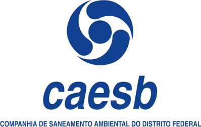

Posto de trabalho
Telefone IP de uso geral
Yealink T33G, telefone IP com tela colorida, 4 linhas e porta Gigabit.
- Yealink T33G

Companhia de Saneamento Ambiental do Distrito Federal · Brasília/DF
Um único padrão de telefone IP para toda a operação, com três níveis de uso: o posto de trabalho comum, as funções com alto volume de chamadas e as posições de atendimento e recepção.
Yealink T33G, telefone IP com tela colorida, 4 linhas e porta Gigabit.
Yealink T46U, com tela colorida de 4,3 polegadas, 16 linhas e portas USB.
Yealink EXP43, com tela colorida e teclas programáveis para acompanhar vários ramais ao mesmo tempo.
Marcas pertencentes aos respectivos órgãos, usadas para identificação do projeto.